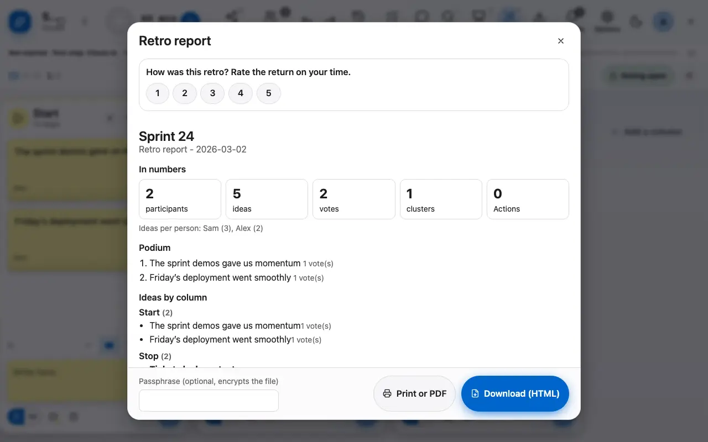
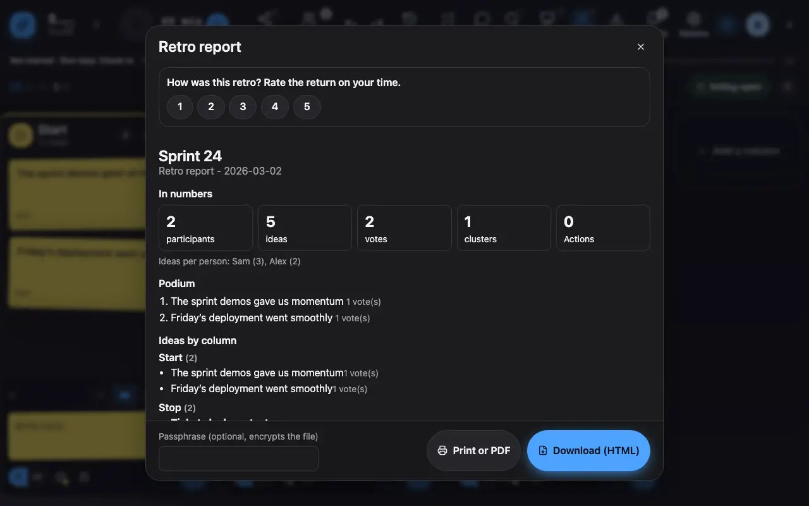

Export and keep a record
The retro report fits in one self-contained HTML file.
1 The report gathers the podium, the ideas by column and the actions.
The retro report gathers the key figures, the podium of the most voted ideas, the ideas by column and the actions. It downloads as one self-contained HTML file that opens offline; an optional passphrase encrypts the file.

